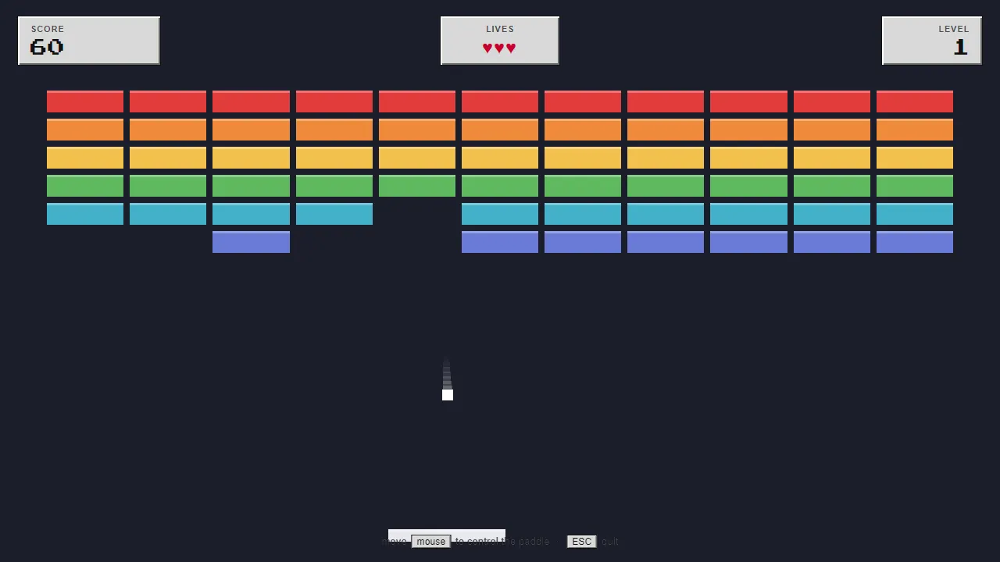
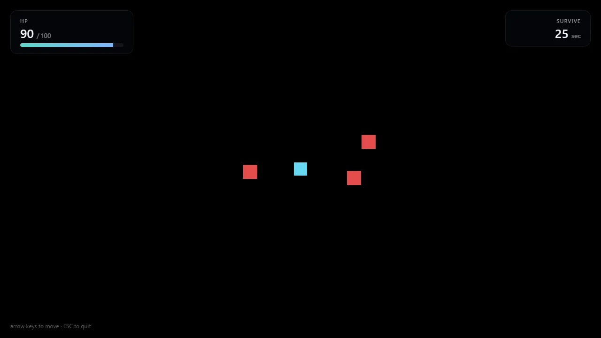
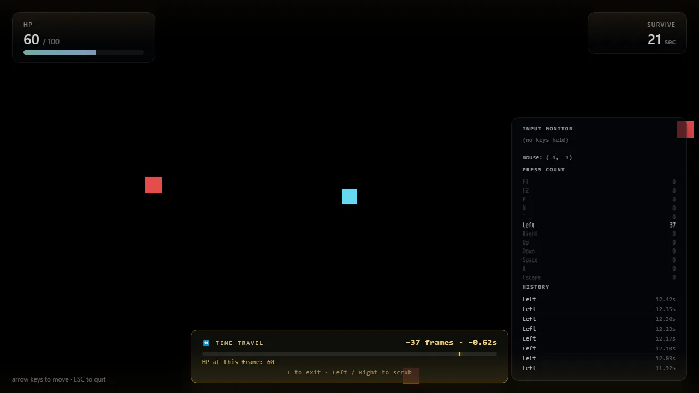
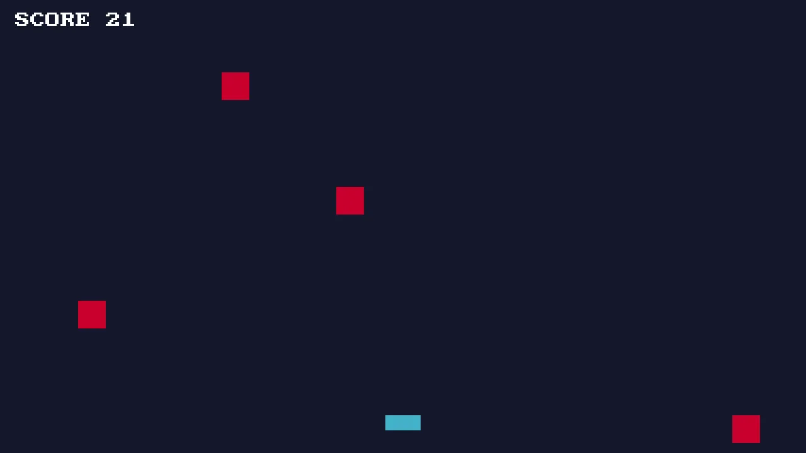

Engine
MitiruEngine
ひとりで書き続けている、自作の C++ ゲームエンジンです。 ゲームの中身（動き・当たり判定・スコア）は C++ で、メニューや体力バーなどの画面表示は Web ページと同じ HTML / CSS で書けます。コマンドひとつでプロジェクトを作り、数分で動く窓が出ます。
どんなもの？
下の画面は、このエンジンで作ったサンプルのブロック崩しです。ボールやブロックの動きは C++ で、上のスコア・残機・レベルの表示は HTML と CSS で書かれています。

数値は 2026 年 6 月時点。描画は OpenGL / DirectX 11・12 / Vulkan などを同じ書き方で切り替えられます。
なぜ自分でエンジンを書くのか
Unity や Godot を使えば、ゲームを作るだけなら困りません。それでも自分で書くのは、ゲームが画面に出るまでに何がどう動いているかを、使う側ではなく作る側から知っておきたいからです。
目的はエンジンそのものではなく、ゲームを深く作れる人間でいるための足場です。ゲーム制作は並行して進めていて、そこで詰まった課題をエンジンに書き戻す、という往復で育てています。
考え方 ── 必要なものしか画面に出さない
Unity / Godot のような「たくさんのパネルが同時に並ぶ全部入りエディタ」は作りません。逆の方向に振っています。
- 道具は 1 つにつき 1 ウィンドウ。描画の確認、音の確認、デバッグ表示は、それぞれ独立した小さな窓で、必要なときだけ開きます
- ふだんは何も開かない。ゲームの窓だけがある状態が基本です
- 操作はコマンドから。プロジェクト作成・ビルド・実行はすべて
mitiruコマンドでできるので、エディタは Visual Studio でも VS Code でもメモ帳でも構いません
「画面がごちゃごちゃしない」だけの話に見えますが、エンジンの中身も同じ方針で、部品ごとに独立して動くように作ってあります。
ゲームの書き方
書くのは「状態のまとまり（struct）」と「毎フレームの処理（update / draw）」だけです。最後の 1 行でエンジンに繋がります。
struct MyGame {
float x = 600;
int score = 0;
void update(Input in, Hud hud, float dt) {
if (in.down(Key::Right)) x += 320 * dt; // → キーで右へ
hud.set("view.hud.score", score); // スコアを画面表示へ送る
}
void draw(Screen& s) { /* 四角や文字を描く */ }
};
MITIRU_GAME(MyGame) // この 1 行でエンジンに繋がる
C++ から送った値は、HTML 側で <span data-m-text="view.hud.score"> と書くだけで表示されます。JavaScript は書きません。

ゲームコードを保存すると、動いているゲームを止めずにその場で反映されます（位置や HP などの状態は保ったまま）。数字を変えて手触りを試す、を高速に繰り返せます。
いちばんの特徴 ── 巻き戻して、観察できる
プレイ中に T キーを押すと、直前 5 秒を 1 フレームずつ巻き戻して見られます。「なぜか HP が減った」というとき、その瞬間まで戻って、何が起きたかを目で確認できます。

さらに、プレイ中の入力はすべて自動で記録されていて、あとから同じプレイをそっくり再生できます。「たまにしか起きないバグ」を録画しておいて何度でも再現する、テストとして毎回流す、という使い方ができます。
こうした道具が成立するのは、ゲームの状態を 1 か所にまとめて持つ、というエンジンの構造上の約束があるからです。機能を後付けしたのではなく、設計の段階からこれらを目的にしています。
MitiruEngine で動いているもの
エンジンは「実際にゲームを出せる道具」になっていてこそなので、いま動いているものを並べておきます。
- ハトを育てよう（リメイク） ── 2023 年に作ったノベルゲームを、このエンジン上で完全移植。セーブ・ロードやバックログなどの追加要素込みで動いています
- かえるクレープへようこそ ── コミックマーケットで配布したゲームを、Godot からこのエンジンへ移植中
- 同梱サンプル ── ブロック崩し、よけゲーム、サバイバルゲームなど。コードを読んで真似るところから始められます
- NPR 輪郭線の時間安定化 ── アニメ調の輪郭線がチラつく問題への実験（Lab）。実験台としてもこのエンジンを使っています

リンク
コードは公開しています。エンジン自体の紹介サイトも別途用意しています。